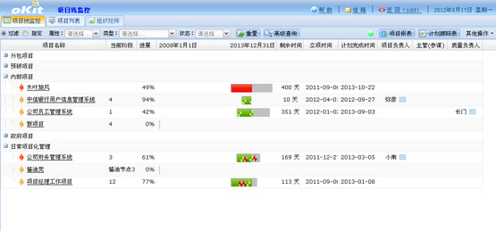
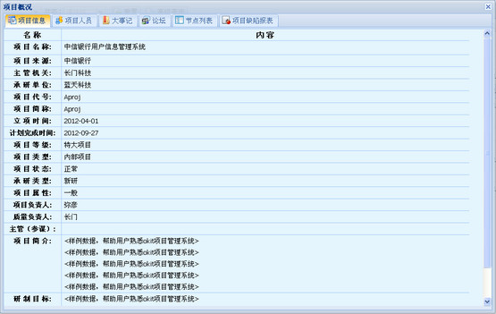
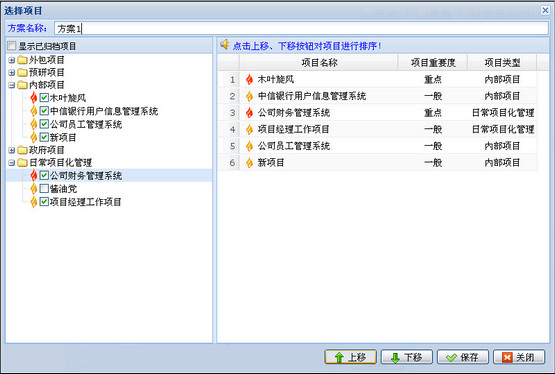
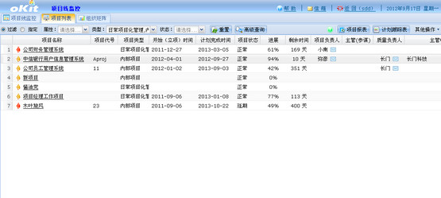
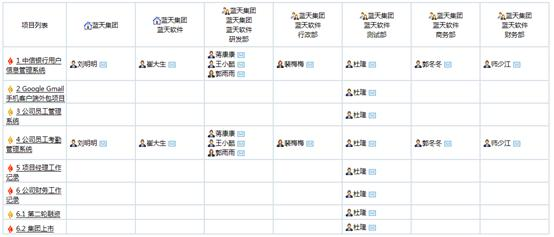
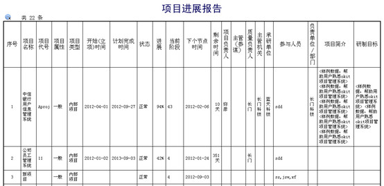
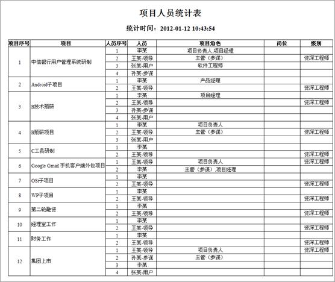
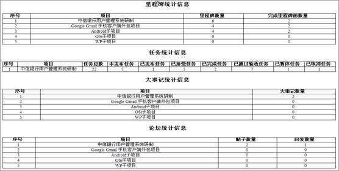
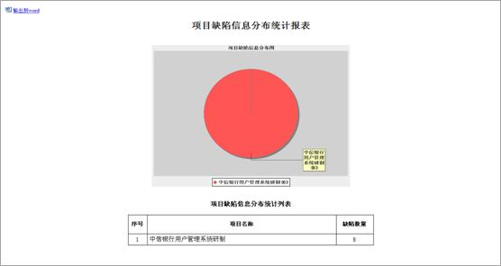
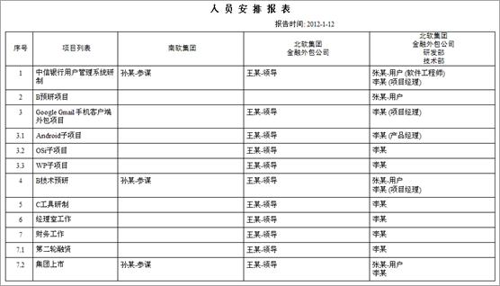

项目线监控模块为公司负责人提供项目进展情况监控，项目概要信息查看、人员组成、组织结构等量化管理项目的平台。项目线监控模块具体包括项目线监控、项目列表、组织矩阵三大功能模块。
通过项目线，项目负责人可以监控项目进展情况，查看项目概要信息，还可根据需要查询项目，并输出进展报告。
项目线涵盖项目概况、项目间关系、项目进展情况等各项内容，直观的显示各项目的进展情况，如下图所示：

图 项目线监控页面
点击项目监控列表中项目名称的链接将弹出项目概况窗口如下图所示。项目概况包含项目信息、项目人员、大事记、论坛、大事记列表、项目缺陷报表等信息。

图 项目概况
在项目线监控界面点击工具栏的“查询”按钮可以查询项目，过滤条件有项目属性、类型和项目状态。在项目线监控界面，选择指定查询条件，选择方案进行查询；在方案管理界面，可以添加自己需要查询的项目，并且可以调整项目顺序。

图 方案管理
项目以列表的形式展示，用户可以方便详细地查看项目各项信息。
在项目列表中点击项目名称的链接可查看项目概况。项目列表如下图所示：

图 项目列表
点击工具栏的“查询”可从多个条件过滤，查询希望查看的项目信息。
组织管理矩阵展示了单位（部门）、项目及人员间的关系，如下图所示：

图 查看组织管理矩阵
1、项目报告：
在项目线监控界面选择工具栏的“项目报告”按钮，生成的“项目报告”如下图所示：

图 项目进展报告
2、项目人员统计
在项目监控界面通过工具栏的其他操作找到“输出项目人员”按钮，生成项目人员统计表如下图所示：

图 项目人员统计表
3、项目统计信息
在项目线监控界面通过工具栏的其他操作找到“项目统计信息”按钮，有选择的输出关注项目的各模块节点统计信息、任务统计信息、大事记统计信息、论坛统计信息、配置管理统计信息、需求管理统计信息、产品统计信息、项目参与人员和角色统计信息。如下图所示：

图 项目统计信息
4、项目缺陷分布
通过工具栏的其他操作找到“输出项目缺陷分布”按钮，生成统计各项目缺陷分布信息的报表。如下图所示：

图 项目缺陷信息分布统计报表
5、组织管理矩阵
点击工具栏按钮的“输出组织管理矩阵报表”按钮，可将组织矩阵以报表形式输出，如下图所示：

图 组织管理矩阵报表